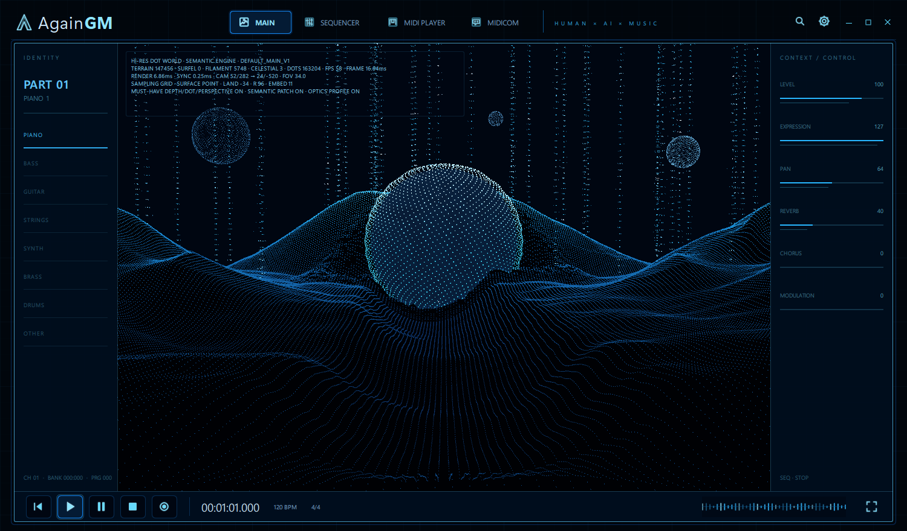
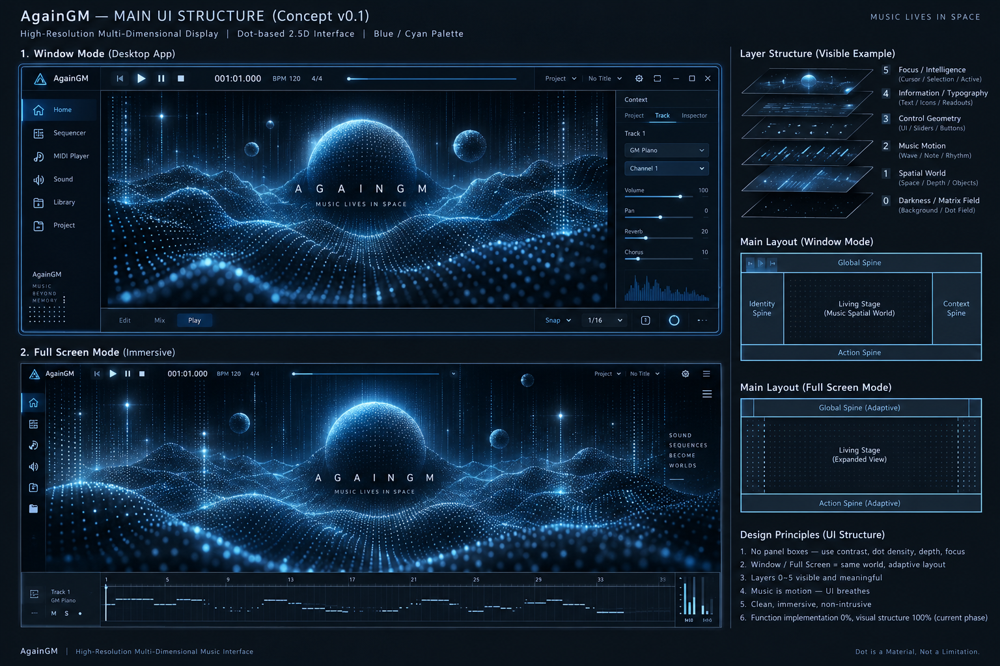
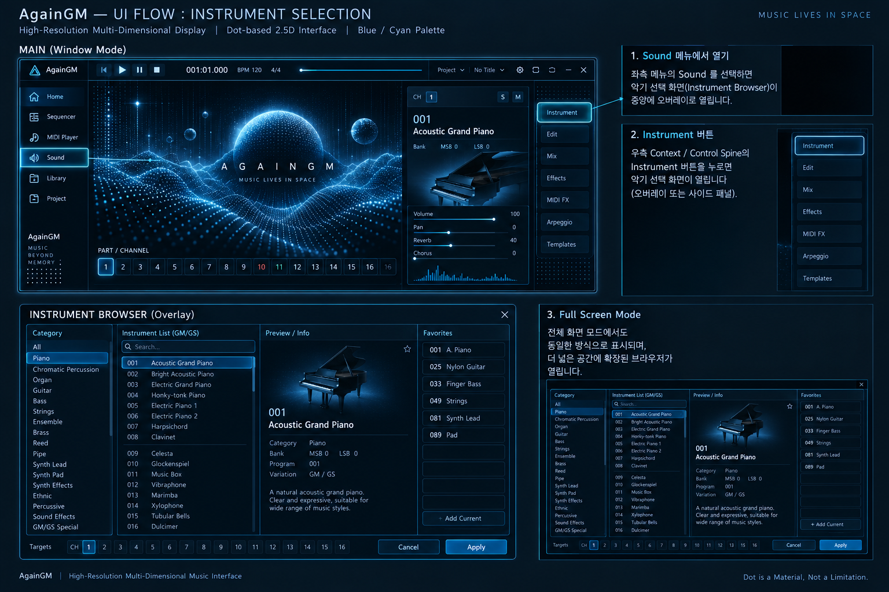
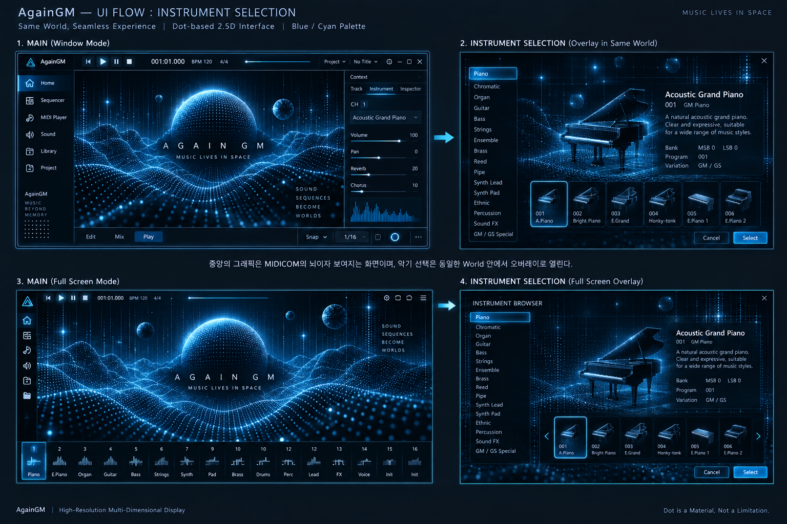
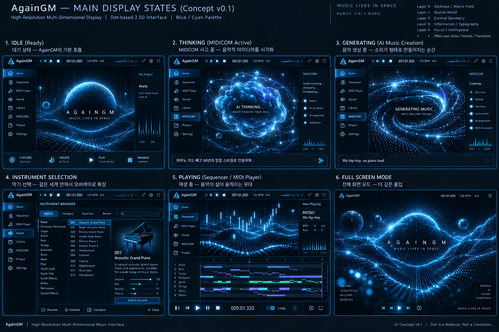
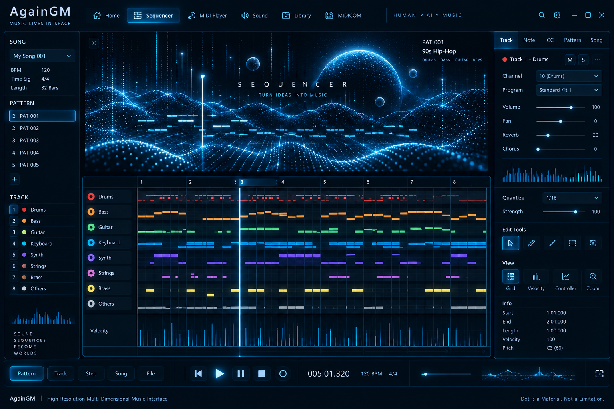
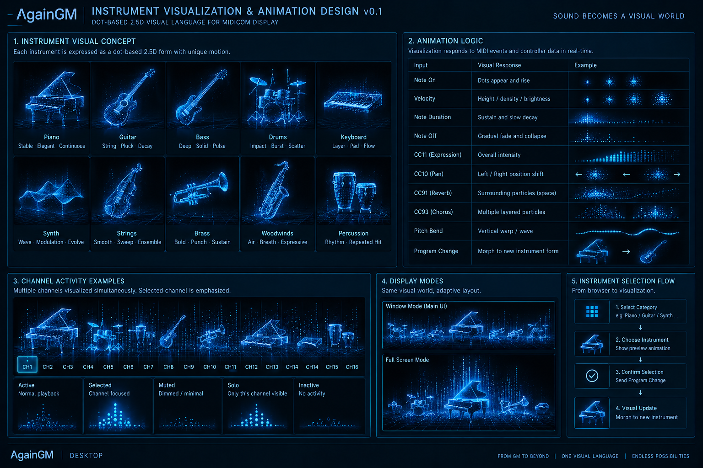

AgainGM
A local-first music intelligence workstation connecting generative music, structured MIDI, AI interaction, external MIDI workflows and a semantic visual world.
From generated audio to editable music
AgainGM is designed to bridge generative music and traditional MIDI-based production. Generated music is treated as creative source material rather than a terminal audio file.
Working software, not a static concept
The current AgainGM desktop build combines the existing application shell with the active high-resolution semantic display system. This image is from the real development build as of September 11, 2026.

Target visual direction
These concept studies define the intended product language for AgainGM: dense dot-based information, dimensional semantic graphics, MIDICOM-centered interaction and an adaptive music-workstation environment. They are design targets rather than screenshots of the current build.






Core directions
Generative Music Integration
Official provider APIs can serve as optional creative sources inside a larger local-first workflow.
Music Intelligence
STEM processing, AMT research and expressive MIDI reconstruction turn audio into structured musical material.
MIDICOM AI
A persistent AI music companion designed for musical context, reasoning, interaction and future learning.
Semantic Visual World
A GPU-accelerated dot-based graphics system represents music and AI-directed expression in real time.
Current development status
AgainGM is in active private development under AgainProject.
- Hi-Res semantic Dot Graphic Engine
- MIDI sequencing and playback infrastructure
- MIDICOM AI runtime
- STEM-to-MIDI / AMT research
- Local STEM separation research
- Windows-native MIDI playback architecture
AgainProject is interested in official developer partnerships with generative-music platforms, particularly APIs that provide production-grade generation, status handling, metadata and stem access.
The goal is not to build a thin API wrapper. Generative music becomes one component inside a broader music-intelligence and creative-computing environment.